For Shawn's friend · refreshed 2026-10-31 · 250 miles around Manteno, IL · checked every morning
Yellow Bronco Board
Every yellow and yellow-gold Ford Bronco for sale within 250 miles, the best Bronco deals in any color, and three groups of vehicles better suited to someone who spends her life on the road. Photos, prices, KBB comparison and a payment estimate on every car; "View" opens the live listing.
Factory yellow, 250 mi
2 Broncos
2023 Heritage Editions in Yellowstone, the only yellow Ford ever painted on this Bronco
Yellow-gold Cyber Orange
28 Broncos
2021 to 2023 Cyber Orange and Raptor Code Orange, from $28,600
New Broncos on lots
3,270 in stock
Dealers are sitting on inventory: Big Bend 4-doors are going $9,000 and more under sticker
AI pick for a high-mileage driver
Toyota RAV4 Hybrid
Double the Bronco's mpg, the best reliability record in the group, roughly $2,844 a year less in gas
Since the last check on 2026-10-30: 59 listings new on the board; 6 price cuts. Rows with a yellow "since last check" pill are the changes.
Yellow Broncos Any-color Bronco deals Road-warrior hybrids Live-in-it space Bronco vibe, less drama How to decide
Yellow Broncos within 250 miles
Ford has painted exactly one yellow on the current Bronco: Yellowstone , offered only on the 2023 Heritage Edition. There is no yellow on the 2024, 2025 or 2026 color charts, so a yellow Bronco is a used 2023 Heritage, a Cyber Orange one (which reads yellow-gold in sunlight), or a wrap. 2 Yellowstone Heritage Editions are for sale inside the radius right now. Autotrader's yellow Bronco search .
Factory yellow: 2023 Heritage Edition in Yellowstone
1
2023 Ford Bronco Heritage Edition
$575 under KBB fair price One owner
49,461 mi 2.7L 6-cyl turbo, 4x4 Yellowstone 4-door ~19 mpg, about $6,145/yr in gas at 25,000 mi
The yellow one you can actually buy today. Heritage Edition means Oxford White roof, grille and wheels over Yellowstone paint, the 2.7 V6 and the Sasquatch 35-inch tire package. Price already cut twice from $56,995. Lafayette is a 90-minute drive.
UNLIMITED MOTORS 4, Lafayette, IN, 79 mi away, listed 28 days ago
2
2023 Ford Bronco Heritage Edition
One owner Just listed
42,013 mi 2.7L 6-cyl turbo, 4x4 Yellowstone 4-door ~19 mpg, about $6,145/yr in gas at 25,000 mi
Second Yellowstone Heritage, 7,000 fewer miles, one owner, at a 4.9-star Cadillac store in the Milwaukee suburbs. Listed with no price shown. KBB fair purchase price is about $55,350, so open at $52,000 and see.
Crest Cadillac Inc ★4.9, Brookfield, WI, 128 mi away, listed 7 days ago
Call for price
KBB fair $55,620
View Cyber Orange and Code Orange, ranked by deal
Cyber Orange Metallic Tri-coat (2021 to 2023) is a saturated yellow-orange; most people call it yellow or "school bus" in person. Code Orange is the Raptor's deeper orange. Ranked by dollars under KBB fair purchase price with credits for one owner, low miles and distance; accident cars are flagged and pushed down. See all orange Broncos on Autotrader .
1
no photo
2022 Ford Bronco Wildtrak
$3,653 under KBB fair price Autotrader: Great price Just listed
16,106 mi 2.7L 6-cyl turbo, 4x4 Orange Metallic 4-door ~17 mpg, about $6,868/yr in gas at 25,000 mi
Best orange buy on the board: Great price per Autotrader, $3,653 under KBB, 16,106 miles, 5.0-star dealer, Old Orchard Nissan in Skokie, IL, listed 3 days ago.
353A High Package
Old Orchard Nissan ★5.0, Skokie, IL, 56 mi away, listed 3 days ago
2
2021 Ford Bronco Outer Banks
Certified pre-owned $3,369 under KBB fair price Autotrader: Great price One owner
50,344 mi 2.3L 4-cyl turbo, 4x4 Cyber Orange Metallic Tricoat 4-door ~15 mpg, about $7,783/yr in gas at 25,000 mi
313A High Package
Rosen Ford ★4.9, Belleville, WI, 142 mi away, listed 87 days ago
3
2021 Ford Bronco First Edition
$3,699 under KBB fair price Autotrader: Great price One owner
35,563 mi 2.7L 6-cyl turbo, 4x4 Orange Metallic 4-door ~19 mpg, about $6,145/yr in gas at 25,000 mi
Kunes Lakes Chevrolet, Lake Bluff, IL, 71 mi away, listed 32 days ago
4
2022 Ford Bronco Black Diamond
$2,460 under KBB fair price Autotrader: Great price One owner Sasquatch (35s)
54,382 mi 2.3L 4-cyl turbo, 4x4 Orange Metallic 4-door ~15 mpg, about $7,783/yr in gas at 25,000 mi
Sasquatch Package
Andy Mohr Chrysler Dodge Jeep Ram ★4.7, Indianapolis, IN, 124 mi away, listed 46 days ago
5
2021 Ford Bronco First Edition
$2,748 under KBB fair price Autotrader: Great price
14,810 mi 2.7L 6-cyl turbo, 4x4 Orange Metallic 4-door ~19 mpg, about $6,145/yr in gas at 25,000 mi
D-Patrick Ford Lincoln ★4.7, Evansville, IN, 227 mi away, listed 141 days ago
6
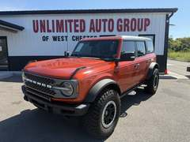
2023 Ford Bronco Badlands
$4,136 under KBB fair price Autotrader: Great price Accident reported Sasquatch (35s)
74,880 mi 2.7L 6-cyl turbo, 4x4 Orange 4-door ~17 mpg, about $6,868/yr in gas at 25,000 mi
334A Lux Package; Sasquatch Package
Unlimited Auto Group ★4.4, West Chester, OH, 224 mi away, listed 56 days ago
7
2022 Ford Bronco Raptor
Certified pre-owned $4,274 under KBB fair price
45,976 mi 3L 6-cyl turbo, 4x4 Cyber Orange Metallic Tricoat 4-door ~15 mpg, about $7,783/yr in gas at 25,000 mi
374A Lux Package; Interior Carbon Fiber Pack 6
Suntrup Ford - Westport ★4.3, Saint Louis, MO, 223 mi away, listed 57 days ago
8
2022 Ford Bronco Raptor
$2,845 under KBB fair price
38,984 mi 3L 6-cyl turbo, 4x4 Code Orange 4-door ~15 mpg, about $7,783/yr in gas at 25,000 mi
374A Lux Package; Interior Carbon Fiber Pack 6
Motor Cars of Chicago ★4.7, Joliet, IL, 29 mi away, listed 111 days ago
9
2022 Ford Bronco Badlands
$661 under KBB fair price Autotrader: Great price One owner Sasquatch (35s)
25,579 mi 2.7L 6-cyl turbo, 4x4 Orange Metallic 2-door ~17 mpg, about $6,868/yr in gas at 25,000 mi
334A Lux Package; Sasquatch Package
Premier Auto Source - IN ★4.7, Terre Haute, IN, 130 mi away, listed 399 days ago
10
2022 Ford Bronco Big Bend
$410 under KBB fair price Autotrader: Great price One owner Price cut $500
32,759 mi 2.7L 6-cyl turbo, 4x4 Cyber Orange Metallic Tricoat 2-door ~19 mpg, about $6,145/yr in gas at 25,000 mi
222A Mid Package
Webb Ford ★4.6, Highland, IN, 28 mi away, listed 10 days ago
11
2023 Ford Bronco Raptor
$1,278 under KBB fair price One owner
27,286 mi 3L 6-cyl turbo, 4x4 Code Orange 4-door ~15 mpg, about $7,783/yr in gas at 25,000 mi
374A Lux Package; Interior Carbon Fiber Pack 6
Heller Ford Sales Inc ★5.0, El Paso, IL, 71 mi away, listed 122 days ago
12
2021 Ford Bronco Outer Banks
Certified pre-owned $1,528 under KBB fair price Autotrader: Great price
66,091 mi 2.3L 4-cyl turbo, 4x4 Orange Metallic 4-door ~15 mpg, about $7,783/yr in gas at 25,000 mi
Andy Mohr Ford ★4.6, Plainfield, IN, 132 mi away, listed 69 days ago
13
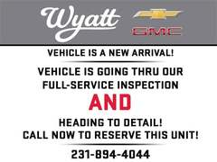
2022 Ford Bronco Black Diamond
New since last check One owner Just listed Sasquatch (35s)
0 mi 2.3L 4-cyl turbo, 4x4 Yellow 4-door ~15 mpg, about $7,783/yr in gas at 25,000 mi
Sasquatch Package
Wyatt Chevrolet GMC ★5.0, Whitehall, MI, 168 mi away, listed today
14
2022 Ford Bronco 4-Door
One owner
42,927 mi 2.7L 6-cyl turbo, 4x4 Cyber Orange Metallic Tri-coat 4-door ~19 mpg, about $6,145/yr in gas at 25,000 mi
R & B Car Company ★4.8, Warsaw, IN, 102 mi away, listed 11 days ago
15
2022 Ford Bronco Black Diamond
Certified pre-owned $211 under KBB fair price One owner Sasquatch (35s)
66,188 mi 2.7L 6-cyl turbo, 4x4 Cyber Orange Met Tri-coat 4-door ~17 mpg, about $6,868/yr in gas at 25,000 mi
Sasquatch Package; 322A Mid Package
LAPORTE FORD, La Porte, IN, 65 mi away, listed 24 days ago
16
2022 Ford Bronco Big Bend
57,801 mi 2.3L 4-cyl turbo, 4x4 Cyber Orange Metallic Tricoat 4-door ~15 mpg, about $7,783/yr in gas at 25,000 mi
222A Mid Package
Hubler Chevrolet ★4.5, Indianapolis, IN, 143 mi away, listed 141 days ago
17
2021 Ford Bronco Outer Banks
One owner
67,253 mi 2.3L 4-cyl turbo, 4x4 Cyber Orange Metallic Tricoat 4-door ~15 mpg, about $7,783/yr in gas at 25,000 mi
Van Horn Ford of Oconomowoc ★5.0, Oconomowoc, WI, 132 mi away, listed 10 days ago
18
2022 Ford Bronco Wildtrak
Certified pre-owned $575 over KBB fair price Good price
50,135 mi 2.7L 6-cyl turbo, 4x4 Orange Metallic 4-door ~17 mpg, about $6,868/yr in gas at 25,000 mi
354A Lux Package
Pat Milliken Ford ★4.9, Redford, MI, 248 mi away, listed 10 days ago
19
2022 Ford Bronco Outer Banks
$295 over KBB fair price Good price One owner
106,948 mi 2.7L 6-cyl turbo, 4x4 Orange 4-door ~19 mpg, about $6,145/yr in gas at 25,000 mi
314A Lux Package
CAR AND DRIVE MOTORSPORTS ★2.8, Midlothian, IL, 27 mi away, listed 380 days ago
20
no photo
2023 Ford Bronco Raptor
$1,770 over KBB fair price Good price
63,133 mi 3L 6-cyl turbo, 4x4 Code Orange 4-door ~15 mpg, about $7,783/yr in gas at 25,000 mi
374A Lux Package; Interior Carbon Fibre Pack
Carzby ★4.8, Fenton, MI, 238 mi away, listed 12 days ago
21
2021 Ford Bronco First Edition
One owner Accident reported Price cut $2,413
32,000 mi 2.7L 6-cyl turbo, 4x4 Orange Metallic 4-door ~19 mpg, about $6,145/yr in gas at 25,000 mi
Fox GMC ★4.8, Comstock Park, MI, 167 mi away, listed 60 days ago
22
2021 Ford Bronco Outer Banks
$1,006 over KBB fair price Just listed Sasquatch (35s)
76,003 mi 2.7L 6-cyl turbo, 4x4 Cyber Orange Metallic Tricoat 4-door ~17 mpg, about $6,868/yr in gas at 25,000 mi
Sasquatch Package; 313A High Package
Derrow-Shirkey Ford Lincoln ★4.5, Montpelier, OH, 170 mi away, listed 5 days ago
23
2021 Ford Bronco Outer Banks
$1,744 over KBB fair price Price cut $1,000 Sasquatch (35s)
47,291 mi 2.7L 6-cyl turbo, 4x4 Orange Metallic 4-door ~17 mpg, about $6,868/yr in gas at 25,000 mi
Sasquatch Package
Feldman Chevrolet of Livonia ★4.6, Livonia, MI, 243 mi away, listed 18 days ago
24
2021 Ford Bronco Black Diamond
$1,490 over KBB fair price Good price One owner
79,595 mi 2.3L 4-cyl turbo, 4x4, manual Orange Metallic 4-door ~15 mpg, about $7,783/yr in gas at 25,000 mi
Brighton Ford ★4.8, Brighton, MI, 227 mi away, listed 16 days ago
25
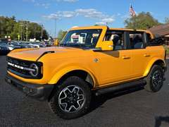
2022 Ford Bronco Outer Banks
$3,595 over KBB fair price One owner
25,562 mi 2.7L 6-cyl turbo, 4x4 Cyber Orange Metallic 4-door ~19 mpg, about $6,145/yr in gas at 25,000 mi
314A Lux Package
The Auto Livery ★4.3, Ross, OH, 215 mi away, listed 395 days ago
26
2022 Ford Bronco Outer Banks
$5,337 over KBB fair price One owner Just listed Sasquatch (35s)
2,696 mi 2.7L 6-cyl turbo, 4x4 Cyber Orange Metallic Tricoat 2-door ~17 mpg, about $6,868/yr in gas at 25,000 mi
Sasquatch Package; 314A Lux Package
Gem City Ford Lincoln ★4.9, Quincy, IL, 204 mi away, listed 3 days ago
27
2021 Ford Bronco Badlands
$2,815 over KBB fair price
73,229 mi 2.3L 4-cyl turbo, 4x4 Orange Metallic 4-door ~15 mpg, about $7,783/yr in gas at 25,000 mi
333A High Package
Clift Buick GMC ★4.8, Adrian, MI, 201 mi away, listed 39 days ago
28
2026 Ford Bronco Big Bend
$12,359 over KBB fair price One owner Sasquatch (35s)
65 mi 2.3L 4-cyl turbo, 4x4 Orange 4-door ~15 mpg, about $7,783/yr in gas at 25,000 mi
Black Diamond Package; Sasquatch Package; 222A Mid
Packey Webb Ford ★4.7, Downers Grove, IL, 40 mi away, listed 27 days ago
Cheaper and new: 2026 Bronco Sport in Orange Fury
Orange Fury Metallic Tri-coat is new for 2026 and is the closest Ford gets to yellow today. The Bronco Sport is the smaller, car-based Bronco: 26 mpg instead of 20, a quieter cabin, no removable roof. New ones in this color are being discounted $4,000 to $7,000 under sticker. All orange Bronco Sports .
1
2026 Ford Bronco Sport Outer Banks
New $6,750 under sticker
New 1.5L 3-cyl turbo, 4x4 Orange Fury Metallic Tri-coat ~26 mpg, about $4,490/yr in gas at 25,000 mi
Outer Banks Tech Package+; Class II Trailer Tow Pa
Auto Park Ford of Sturgis ★5.0, Sturgis, MI, 130 mi away, listed 140 days ago
2
2026 Ford Bronco Sport Big Bend
New $5,676 under sticker
New 1.5L 3-cyl turbo, 4x4 Orange Fury Metallic Tri-coat ~26 mpg, about $4,490/yr in gas at 25,000 mi
Convenience Package
GRAFF FORD OF CHESTERTON ★5.0, Chesterton, IN, 45 mi away, listed 77 days ago
3
2026 Ford Bronco Sport Big Bend
New $5,750 under sticker
New 1.5L 3-cyl turbo, 4x4 Orange Fury Metallic Tri-coat ~26 mpg, about $4,490/yr in gas at 25,000 mi
Convenience Package; Black Appearance Package
Kings Ford ★5.0, Cincinnati, OH, 230 mi away, listed 36 days ago
4
2026 Ford Bronco Sport Big Bend
New $5,277 under sticker
New 1.5L 3-cyl turbo, 4x4 Orange Fury Metallic Tri-coat ~26 mpg, about $4,490/yr in gas at 25,000 mi
Ford Connectivity Pack (1-Time Purchase - 7 Years)
Wetzel Ford ★4.7, Richmond, IN, 186 mi away, listed 192 days ago
5
2026 Ford Bronco Sport Big Bend
New $5,450 under sticker
New 1.5L 3-cyl turbo, 4x4 Orange Fury Metallic Tri-coat ~26 mpg, about $4,490/yr in gas at 25,000 mi
Suntrup Ford Westport ★4.3, Saint Louis, MO, 223 mi away, listed 112 days ago
6
2026 Ford Bronco Sport Big Bend
New $5,008 under sticker
New 1.5L 3-cyl turbo, 4x4 Orange Fury Metallic Tri-coat ~26 mpg, about $4,490/yr in gas at 25,000 mi
Buss Ford ★4.9, Mchenry, IL, 78 mi away, listed 296 days ago
7
2026 Ford Bronco Sport Outer Banks
New since last check New $5,750 under sticker
New 1.5L 3-cyl turbo, 4x4 Orange Fury Metallic Tri-coat ~26 mpg, about $4,490/yr in gas at 25,000 mi
Ford Connectivity Pack (1-Time Purchase - 7 Years)
Suntrup Ford Westport ★4.3, Saint Louis, MO, 223 mi away, listed 130 days ago
8
2026 Ford Bronco Sport Big Bend
New since last check New $4,777 under sticker One owner
New 1.5L 3-cyl turbo, 4x4 Orange ~26 mpg, about $4,490/yr in gas at 25,000 mi
Convenience Package
Gordie Boucher Ford of Janesville ★5.0, Janesville, WI, 117 mi away, listed 30 days ago
9
2026 Ford Bronco Sport Big Bend
New $4,996 under sticker
New 1.5L 3-cyl turbo, 4x4 Orange ~26 mpg, about $4,490/yr in gas at 25,000 mi
Convenience Package; Interior Protection Package
Currie Ford of Valparaiso ★5.0, Valparaiso, IN, 42 mi away, listed 66 days ago
10
2026 Ford Bronco Sport Outer Banks
New $5,505 under sticker One owner Sasquatch (35s)
New 1.5L 3-cyl turbo, 4x4 Orange Fury Metallic Tri-coat ~26 mpg, about $4,490/yr in gas at 25,000 mi
Sasquatch Outer Banks Package; Outer Banks Tech Pa
Gordie Boucher Ford of Janesville ★5.0, Janesville, WI, 117 mi away, listed 51 days ago
No full-size 2026 Bronco in Orange Fury has reached a dealer lot inside 250 miles yet; one can be ordered through any Ford store. This board checks every day and will flag the first one.
Want a true yellow and a new truck?
Order a 2026 Bronco in Oxford White or Wimbledon White and have it wrapped yellow. A quality full wrap runs about $3,500 to $5,500 in the Chicago area, lasts 5 to 7 years, protects the paint and peels off at resale.
Orange Fury (2026) is a factory alternative in the same warm family. Shows in the configurator on Big Bend, Outer Banks and Badlands.
Skip the aftermarket respray: $8,000+ and it hurts resale. Before she buys any Bronco
Pull the Ford OASIS warranty history by VIN at the dealer: confirms whether a 2021 to early-2022 2.7 V6 had its intake-valve engine replacement, and whether the hardtop was swapped under the 2021 recall.
Prefer a 2.3-liter four for commuting miles: cheaper, 1 to 2 mpg better, and it sidestepped the 2.7 valve problem.
Sasquatch 35-inch tires cost about 2 mpg, add road noise and run $1,600 a set. Great for the look, bad for 25,000 miles a year.
Best Bronco deals in any color
Out of about 1,364 used and 3,270 new Broncos inside 250 miles, these are the ones priced furthest under KBB fair purchase price (used) or under sticker (new), with no accident or salvage history. Blue, white, green and red are plentiful; a wrap turns any of them yellow. All "Great price" Broncos on Autotrader .
Used, ranked by deal score
1
2023 Ford Bronco Outer Banks
$8,340 under KBB fair price Autotrader: Great price Price cut $3,812
70,360 mi 2.7L 6-cyl turbo, 4x4 Race Red 4-door ~19 mpg, about $6,145/yr in gas at 25,000 mi
Top of the board: a 2023 Outer Banks Great price per Autotrader, $8,340 under KBB, 70,360 miles, 4.8-star dealer. Outer Banks is the comfortable trim (heated leather, bigger screen) for someone who lives on the highway.
Crippen Cars ★4.8, Lansing, MI, 193 mi away, listed 88 days ago
2
2022 Ford Bronco Black Diamond
$6,509 under KBB fair price Autotrader: Great price One owner
7,293 mi 2.7L 6-cyl turbo, 4x4 Area 51 4-door ~19 mpg, about $6,145/yr in gas at 25,000 mi
322A Mid Package
Autohaus on Edens Inc ★4.6, Northbrook, IL, 60 mi away, listed 87 days ago
3
2023 Ford Bronco Outer Banks
$6,469 under KBB fair price Autotrader: Great price Price cut $1,100
10,972 mi 2.7L 6-cyl turbo, 4x4 Hot Pepper Red Metallic Tinted 4-door ~19 mpg, about $6,145/yr in gas at 25,000 mi
Team Chevrolet ★5.0, Valparaiso, IN, 42 mi away, listed 64 days ago
4
2023 Ford Bronco Outer Banks
Certified pre-owned $6,774 under KBB fair price Autotrader: Great price One owner
47,101 mi 2.7L 6-cyl turbo, 4x4 Shadow Black 4-door ~19 mpg, about $6,145/yr in gas at 25,000 mi
313A High Package
Lasco Ford ★4.7, Fenton, MI, 237 mi away, listed 30 days ago
5
2023 Ford Bronco Big Bend
$5,689 under KBB fair price Autotrader: Great price One owner Price cut $3,289
18,065 mi 2.7L 6-cyl turbo, 4x4 Eruption Green Metallic 4-door ~19 mpg, about $6,145/yr in gas at 25,000 mi
LaFontaine Lincoln Grand Rapids ★4.9, Grand Rapids, MI, 162 mi away, listed 79 days ago
6
2022 Ford Bronco Outer Banks
$6,097 under KBB fair price Autotrader: Great price
35,009 mi 2.3L 4-cyl turbo, 4x4 Oxford White 4-door ~15 mpg, about $7,783/yr in gas at 25,000 mi
Mike Castrucci Ford Lincoln of Alexandria ★4.8, Alexandria, KY, 240 mi away, listed 118 days ago
7
2021 Ford Bronco Big Bend
$6,046 under KBB fair price Autotrader: Great price Price cut $1,000
21,698 mi 2.3L 4-cyl turbo, 4x4 Gray 4-door ~15 mpg, about $7,783/yr in gas at 25,000 mi
Tom Gill Chevrolet ★5.0, Florence, KY, 229 mi away, listed 94 days ago
8
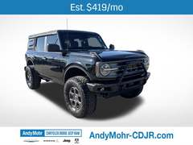
2021 Ford Bronco Big Bend
$5,292 under KBB fair price Autotrader: Great price One owner
42,712 mi 2.3L 4-cyl turbo, 4x4 Shadow Black 4-door ~15 mpg, about $7,783/yr in gas at 25,000 mi
222A Mid Package
Andy Mohr Chrysler Dodge Jeep Ram ★4.7, Indianapolis, IN, 124 mi away, listed 12 days ago
9
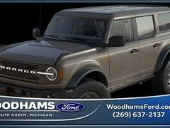
2025 Ford Bronco Badlands
$5,798 under KBB fair price Autotrader: Great price Sasquatch (35s)
6 mi 2.3L 4-cyl turbo, 4x4 Gray 4-door ~15 mpg, about $7,783/yr in gas at 25,000 mi
Sasquatch Package
Woodhams Ford Lincoln ★4.5, South Haven, MI, 113 mi away, listed 325 days ago
10
2024 Ford Bronco Big Bend
New since last check $4,315 under KBB fair price Autotrader: Great price One owner
10,056 mi 2.3L 4-cyl turbo, 4x4 Carbonized Gray Metallic 4-door ~15 mpg, about $7,783/yr in gas at 25,000 mi
222A Mid Package
Raabe Ford Lincoln ★5.0, Delphos, OH, 186 mi away, listed 92 days ago
11
no photo
2023 Ford Bronco Big Bend
New since last check $4,402 under KBB fair price Autotrader: Great price One owner Just listed
37,639 mi 2.3L 4-cyl turbo, 4x4 Hot Pepper Red Metallic Tinted 4-door ~15 mpg, about $7,783/yr in gas at 25,000 mi
Ed Napleton Honda in River Oaks ★5.0, Lansing, IL, 27 mi away, listed 3 days ago
12
2023 Ford Bronco Outer Banks
Certified pre-owned $5,370 under KBB fair price Autotrader: Great price One owner
23,267 mi 2.7L 6-cyl turbo, 4x4 Race Red 4-door ~19 mpg, about $6,145/yr in gas at 25,000 mi
Village Ford ★4.8, Dearborn, MI, 247 mi away, listed 72 days ago
13
2025 Ford Bronco Badlands
Certified pre-owned $5,030 under KBB fair price Autotrader: Great price One owner
19,943 mi 2.7L 6-cyl turbo, 4x4 Azure Gray Metallic 4-door ~17 mpg, about $6,868/yr in gas at 25,000 mi
332A Mid Package
Hopkins Ford of Elgin ★4.8, Elgin, IL, 58 mi away, listed 65 days ago
14
2024 Ford Bronco Badlands
$4,552 under KBB fair price Autotrader: Great price One owner
8,919 mi 2.7L 6-cyl turbo, 4x4 Cactus 2-door ~17 mpg, about $6,868/yr in gas at 25,000 mi
Napleton's River Oaks Chrysler Jeep Dodge ★5.0, Lansing, IL, 27 mi away, listed 23 days ago
15
2023 Ford Bronco Badlands
$6,101 under KBB fair price Autotrader: Great price
18,011 mi 2.7L 6-cyl turbo, 4x4 Oxford White 4-door ~17 mpg, about $6,868/yr in gas at 25,000 mi
332A Mid Package
Poage Chrysler Dodge Jeep RAM FIAT ★4.7, Hannibal, MO, 215 mi away, listed 10 days ago
16
2023 Ford Bronco Big Bend
Cut $100 since last check Certified pre-owned $4,453 under KBB fair price Autotrader: Great price One owner
14,629 mi 2.7L 6-cyl turbo, 4x4 Hot Pepper Red Metallic Tinted 4-door ~19 mpg, about $6,145/yr in gas at 25,000 mi
222A Mid Package
Kunes Ford Of Antioch ★4.7, Antioch, IL, 85 mi away, listed 74 days ago
17
2023 Ford Bronco Big Bend
$4,992 under KBB fair price Autotrader: Great price
28,312 mi 2.3L 4-cyl turbo, 4x4 Shadow Black 4-door ~15 mpg, about $7,783/yr in gas at 25,000 mi
222A Mid Package
Carzby ★4.8, Fenton, MI, 238 mi away, listed 17 days ago
18
2023 Ford Bronco 4-Door
New since last check Certified pre-owned $4,268 under KBB fair price Autotrader: Great price One owner
15,880 mi 2.7L 6-cyl turbo, 4x4 Iconic Silver Metallic 4-door ~19 mpg, about $6,145/yr in gas at 25,000 mi
Sexton Ford Sales Inc ★4.8, Moline, IL, 139 mi away, listed 171 days ago
19
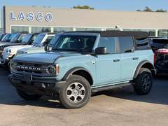
2023 Ford Bronco Big Bend
New since last check Certified pre-owned $4,566 under KBB fair price Autotrader: Great price One owner
41,572 mi 2.3L 4-cyl turbo, 4x4 Area 51 4-door ~15 mpg, about $7,783/yr in gas at 25,000 mi
222A Mid Package
Lasco Ford ★4.7, Fenton, MI, 237 mi away, listed 21 days ago
20
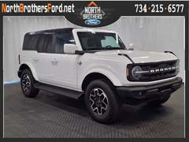
2025 Ford Bronco Outer Banks
Certified pre-owned $4,254 under KBB fair price Autotrader: Great price One owner
13,028 mi 2.7L 6-cyl turbo, 4x4 White 4-door ~19 mpg, about $6,145/yr in gas at 25,000 mi
North Brothers Ford ★4.7, Westland, MI, 242 mi away, listed 161 days ago
21
2023 Ford Bronco Outer Banks
$5,530 under KBB fair price Autotrader: Great price
64,756 mi 2.7L 6-cyl turbo, 4x4 Iconic Silver Metallic 4-door ~19 mpg, about $6,145/yr in gas at 25,000 mi
Jeff Wyler Acura of Fairfield ★4.8, Fairfield, OH, 219 mi away, listed 113 days ago
22
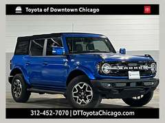
2022 Ford Bronco Outer Banks
New since last check $4,586 under KBB fair price Autotrader: Great price
32,493 mi 2.3L 4-cyl turbo, 4x4 Blue Metallic 4-door ~15 mpg, about $7,783/yr in gas at 25,000 mi
314A Lux Package
Toyota of Downtown Chicago ★4.7, Chicago, IL, 47 mi away, listed 42 days ago
23
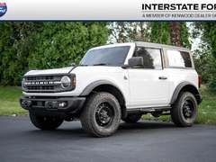
2022 Ford Bronco Black Diamond
New since last check $4,760 under KBB fair price Autotrader: Great price Price cut $1,948
46,840 mi 2.3L 4-cyl turbo, 4x4, manual Oxford White 2-door ~15 mpg, about $7,783/yr in gas at 25,000 mi
Interstate Ford Inc ★5.0, Miamisburg, OH, 219 mi away, listed 111 days ago
24
2022 Ford Bronco 2-Door
$5,121 under KBB fair price Autotrader: Great price Sasquatch (35s)
18,772 mi 2.7L 6-cyl turbo, 4x4 Iconic Silver Metallic 2-door ~17 mpg, about $6,868/yr in gas at 25,000 mi
Sasquatch Package
Vaughn Automotive ★3.7, Ottumwa, IA, 240 mi away, listed 58 days ago
25
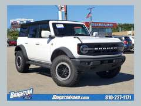
2023 Ford Bronco Outer Banks
Certified pre-owned $4,600 under KBB fair price Autotrader: Great price One owner Sasquatch (35s)
31,224 mi 2.7L 6-cyl turbo, 4x4 Oxford White 4-door ~17 mpg, about $6,868/yr in gas at 25,000 mi
Sasquatch Package
Brighton Ford ★4.8, Brighton, MI, 227 mi away, listed 37 days ago
26
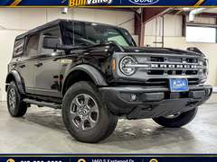
2023 Ford Bronco Big Bend
New since last check Certified pre-owned $4,596 under KBB fair price One owner
28,944 mi 2.3L 4-cyl turbo, 4x4 Shadow Black 4-door ~15 mpg, about $7,783/yr in gas at 25,000 mi
222A Mid Package
Bull Valley Ford ★4.5, Woodstock, IL, 79 mi away, listed 98 days ago
27
2023 Ford Bronco Outer Banks
$4,933 under KBB fair price Autotrader: Great price Just listed
33,492 mi 2.7L 6-cyl turbo, 4x4 Shadow Black 4-door ~19 mpg, about $6,145/yr in gas at 25,000 mi
314A Lux Package
Findlay Chrysler Dodge Jeep Ram ★4.9, Findlay, OH, 217 mi away, listed 3 days ago
28
2024 Ford Bronco Wildtrak
New since last check $4,188 under KBB fair price Autotrader: Great price One owner
15,684 mi 2.7L 6-cyl turbo, 4x4 Shadow Black 4-door ~17 mpg, about $6,868/yr in gas at 25,000 mi
354A Lux Package
Serra Auto Campus ★5.0, Okemos, MI, 200 mi away, listed 72 days ago
29
2024 Ford Bronco Black Diamond
New since last check Certified pre-owned $4,201 under KBB fair price Autotrader: Great price One owner Price cut $3,410
52,136 mi 2.7L 6-cyl turbo, 4x4 Shadow Black - Black 4-door ~19 mpg, about $6,145/yr in gas at 25,000 mi
322A Mid Package
Dave Sinclair Ford ★5.0, St Louis, MO, 231 mi away, listed 57 days ago
30
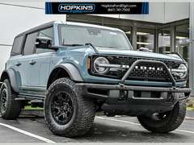
2021 Ford Bronco First Edition
Certified pre-owned $5,200 under KBB fair price Autotrader: Great price
25,593 mi 2.7L 6-cyl turbo, 4x4 Area 51 4-door ~19 mpg, about $6,145/yr in gas at 25,000 mi
Hopkins Ford of Elgin ★4.8, Elgin, IL, 58 mi away, listed 51 days ago
31
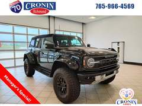
2024 Ford Bronco Raptor
$4,994 under KBB fair price Autotrader: Great price One owner Price cut $1,682
7,647 mi 3L 6-cyl turbo, 4x4 Shadow Black 4-door ~15 mpg, about $7,783/yr in gas at 25,000 mi
Cronin Richmond Toyota Nissan ★5.0, Richmond, IN, 186 mi away, listed 175 days ago
32
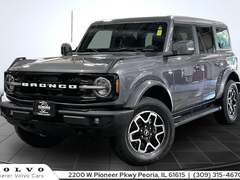
2023 Ford Bronco Outer Banks
New since last check $4,310 under KBB fair price Autotrader: Great price
49,587 mi 2.7L 6-cyl turbo, 4x4 Carbonized Gray Metallic 4-door ~19 mpg, about $6,145/yr in gas at 25,000 mi
313A High Package
Scherer Volvo ★4.9, Peoria, IL, 98 mi away, listed 93 days ago
33
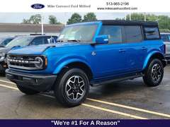
2023 Ford Bronco Outer Banks
New since last check Certified pre-owned $4,270 under KBB fair price Autotrader: Great price
20,283 mi 2.7L 6-cyl turbo, 4x4 Velocity Blue Metallic 4-door ~19 mpg, about $6,145/yr in gas at 25,000 mi
313A High Package
Mike Castrucci Ford ★4.6, Milford, OH, 237 mi away, listed 60 days ago
34
no photo
2023 Ford Bronco Outer Banks
$4,455 under KBB fair price Autotrader: Great price Price cut $1,300
26,050 mi 2.7L 6-cyl turbo, 4x4 Iconic Silver Metallic 4-door ~19 mpg, about $6,145/yr in gas at 25,000 mi
313A High Package
Jim Trenary Ford ★4.3, Moscow Mills, MO, 228 mi away, listed 210 days ago
35
2021 Ford Bronco First Edition
New since last check $5,127 under KBB fair price Autotrader: Great price
29,197 mi 2.7L 6-cyl turbo, 4x4 Rapid Red Metallic Tinted Clea 2-door ~19 mpg, about $6,145/yr in gas at 25,000 mi
Lani Chevrolet GMC Chrysler Dodge Jeep Ram ★4.9, Mount Pleasant, IA, 193 mi away, listed 18 days ago
36
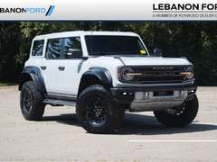
2026 Ford Bronco Raptor
New since last check $4,560 under KBB fair price Autotrader: Great price Price cut $4,448
1,550 mi 3L 6-cyl turbo, 4x4 Avalanche Gray 4-door ~15 mpg, about $7,783/yr in gas at 25,000 mi
Interior Carbon Fiber Pack
Lebanon Ford ★4.9, Lebanon, OH, 229 mi away, listed 59 days ago
New 4-door Big Bends with the biggest discounts
Big Bend 4-door with the 2.3 and the 222A Mid package is the sweet spot for a daily driver. Dealers are discounting 2026 stock thousands under sticker before any Ford rebate; add Ford Credit financing offers on top at the desk.
1
2026 Ford Bronco Big Bend
New $8,338 under sticker
New 2.3L 4-cyl turbo, 4x4 Shadow Black 4-door ~15 mpg, about $7,783/yr in gas at 25,000 mi
222A Mid Package
Ford of Homewood ★5.0, Homewood, IL, 23 mi away, listed 18 days ago
2
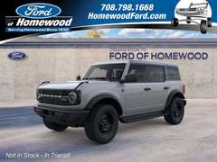
2026 Ford Bronco Big Bend
New $8,586 under sticker
New 2.3L 4-cyl turbo, 4x4 Avalanche Gray 4-door ~15 mpg, about $7,783/yr in gas at 25,000 mi
222A Mid Package; Black Appearance Package
Ford of Homewood ★5.0, Homewood, IL, 23 mi away, listed 30 days ago
3
2026 Ford Bronco Big Bend
New $9,000 under sticker
New 2.3L 4-cyl turbo, 4x4 Ruby Red Metallic Tinted Clear 4-door ~15 mpg, about $7,783/yr in gas at 25,000 mi
222A Mid Package
Dave Sinclair Ford ★5.0, St Louis, MO, 231 mi away, listed 221 days ago
4
2026 Ford Bronco Big Bend
New $8,120 under sticker
New 2.3L 4-cyl turbo, 4x4 Oxford White 4-door ~15 mpg, about $7,783/yr in gas at 25,000 mi
222A Mid Package
Clement Ford ★5.0, Wentzville, MO, 231 mi away, listed 105 days ago
5
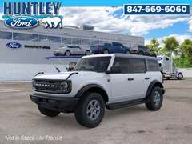
2026 Ford Bronco Big Bend
New $7,938 under sticker
New 2.3L 4-cyl turbo, 4x4 Oxford White 4-door ~15 mpg, about $7,783/yr in gas at 25,000 mi
Huntley Ford ★4.8, Huntley, IL, 68 mi away, listed 15 days ago
6
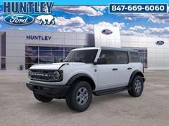
2026 Ford Bronco Big Bend
New $7,826 under sticker
New 2.3L 4-cyl turbo, 4x4 Oxford White 4-door ~15 mpg, about $7,783/yr in gas at 25,000 mi
Huntley Ford ★4.8, Huntley, IL, 68 mi away, listed 28 days ago
7
2026 Ford Bronco Big Bend
New $8,288 under sticker
New 2.3L 4-cyl turbo, 4x4 Desert Sand 4-door ~15 mpg, about $7,783/yr in gas at 25,000 mi
222A Mid Package
Clement Ford ★5.0, Wentzville, MO, 231 mi away, listed 102 days ago
8
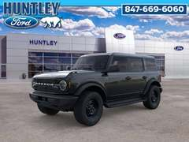
2026 Ford Bronco Big Bend
New $7,487 under sticker
New 2.3L 4-cyl turbo, 4x4 Shadow Black 4-door ~15 mpg, about $7,783/yr in gas at 25,000 mi
222A Mid Package; Black Appearance Package
Huntley Ford ★4.8, Huntley, IL, 68 mi away, listed 155 days ago
9
2026 Ford Bronco Big Bend
New $7,413 under sticker
New 2.3L 4-cyl turbo, 4x4 Desert Sand 4-door ~15 mpg, about $7,783/yr in gas at 25,000 mi
222A Mid Package
Bommarito Ford Superstore ★5.0, Hazelwood, MO, 217 mi away, listed 127 days ago
10
2026 Ford Bronco Big Bend
New $7,425 under sticker
New 2.3L 4-cyl turbo, 4x4 Desert Sand 4-door ~15 mpg, about $7,783/yr in gas at 25,000 mi
222A Mid Package
Bommarito Ford Superstore ★5.0, Hazelwood, MO, 217 mi away, listed 99 days ago
11
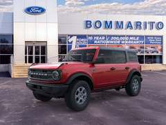
2026 Ford Bronco Big Bend
New $7,406 under sticker
New 2.3L 4-cyl turbo, 4x4 Ruby Red Metallic 4-door ~15 mpg, about $7,783/yr in gas at 25,000 mi
222A Mid Package
Bommarito Ford Superstore ★5.0, Hazelwood, MO, 217 mi away, listed 172 days ago
12
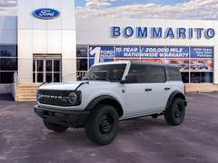
2026 Ford Bronco Big Bend
New $7,504 under sticker
New 2.3L 4-cyl turbo, 4x4 Oxford White 4-door ~15 mpg, about $7,783/yr in gas at 25,000 mi
222A Mid Package; Black Appearance Package
Bommarito Ford Superstore ★5.0, Hazelwood, MO, 217 mi away, listed 51 days ago
Cheapest new Broncos, period
1
2025 Ford Bronco 2-Door
New $5,990 under sticker
New 2.3L 4-cyl turbo, 4x4 Carbonized Gray Metallic 2-door ~15 mpg, about $7,783/yr in gas at 25,000 mi
Murgado Ford of Chicago ★4.6, Chicago, IL, 48 mi away, listed 369 days ago
2
2025 Ford Bronco 2-Door
New $5,990 under sticker
New 2.3L 4-cyl turbo, 4x4 Shadow Black 2-door ~15 mpg, about $7,783/yr in gas at 25,000 mi
Murgado Ford of Chicago ★4.6, Chicago, IL, 48 mi away, listed 358 days ago
3
2025 Ford Bronco 2-Door
New $5,990 under sticker
New 2.3L 4-cyl turbo, 4x4 Shadow Black 2-door ~15 mpg, about $7,783/yr in gas at 25,000 mi
Murgado Ford of Chicago ★4.6, Chicago, IL, 48 mi away, listed 319 days ago
4
2025 Ford Bronco 2-Door
New $5,990 under sticker
New 2.3L 4-cyl turbo, 4x4 Marsh Gray 2-door ~15 mpg, about $7,783/yr in gas at 25,000 mi
Murgado Ford of Chicago ★4.6, Chicago, IL, 48 mi away, listed 307 days ago
5
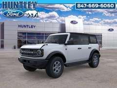
2026 Ford Bronco Big Bend
New $7,293 under sticker
New 2.3L 4-cyl turbo, 4x4 Oxford White 4-door ~15 mpg, about $7,783/yr in gas at 25,000 mi
Huntley Ford ★4.8, Huntley, IL, 68 mi away, listed 142 days ago
6
2026 Ford Bronco 4-Door
New $5,991 under sticker
New 2.3L 4-cyl turbo, 4x4 Shadow Black 4-door ~15 mpg, about $7,783/yr in gas at 25,000 mi
Murgado Ford of Chicago ★4.6, Chicago, IL, 48 mi away, listed 232 days ago
7
2026 Ford Bronco 2-Door
New $5,991 under sticker
New 2.3L 4-cyl turbo, 4x4 Carbonized Gray Metallic 2-door ~15 mpg, about $7,783/yr in gas at 25,000 mi
Murgado Ford of Chicago ★4.6, Chicago, IL, 48 mi away, listed 228 days ago
8
2026 Ford Bronco 2-Door
New $5,991 under sticker
New 2.3L 4-cyl turbo, 4x4 Oxford White 2-door ~15 mpg, about $7,783/yr in gas at 25,000 mi
Murgado Ford of Chicago ★4.6, Chicago, IL, 48 mi away, listed 220 days ago
Road-warrior hybrids
For someone who drives a lot, the thing that matters most after the purchase price is the gas bill and the repair bill. These three put up 36 to 40 mpg in the real world, carry the best reliability records in the SUV class, and still sit high with all-wheel drive for Illinois winters. At 25,000 miles a year a RAV4 Hybrid costs roughly $2,994 a year in gas against $5,838 for a Bronco.
Fit for her
Toyota RAV4 Hybrid Reliability ★★★★★ · Comfort ★★★★ · Room ★★★★
39 mpg combined, AWD standard on the hybrid Toyota Safety Sense (adaptive cruise, lane centering) on every trim Hybrid battery warranty 10 yr / 150,000 mi on 2020 and newer Rear seats fold flat: 69 cu ft, a 6-foot sleeping length Fit for her
Honda CR-V Hybrid Reliability ★★★★★ · Comfort ★★★★★ · Room ★★★★★
37 to 40 mpg, the quietest and roomiest of the compact hybrids Sport-L and Sport Touring get leather and the big screen Most back-seat legroom in the class (41 in) Fewer used ones near Chicago; the good ones are 1 to 3 hours out Fit for her
Lexus NX 350h / RX 350h Reliability ★★★★★ · Comfort ★★★★★ · Room ★★★
Same Toyota hybrid hardware in a quieter, softer car with better seats NX 350h 39 mpg, RX 350h 36 mpg; skip the RX 500h (27 mpg) Lexus certified pre-owned adds a 6-year unlimited-mile warranty Costs $15,000 more than a RAV4 for the same bones; worth it only if comfort is the whole point
Toyota RAV4 Hybrid 1
2022 Toyota RAV4 SE
$3,261 under KBB fair price Autotrader: Great price One owner
71,578 mi 2.5L hybrid, AWD Blue ~39 mpg, about $2,994/yr in gas at 25,000 mi
All Weather Liner Package (TMS)
Jeff Wyler Nissan of Louisville ★5.0, Louisville, KY, 238 mi away, listed 76 days ago
2
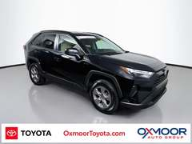
2024 Toyota RAV4 LE
Certified pre-owned $2,770 under KBB fair price Autotrader: Great price One owner
99,504 mi 2.5L hybrid, AWD Midnight Black Metallic ~39 mpg, about $2,994/yr in gas at 25,000 mi
Oxmoor Toyota ★4.9, Louisville, KY, 239 mi away, listed 72 days ago
3
2022 Toyota RAV4 Limited
$2,840 under KBB fair price Autotrader: Great price One owner
93,731 mi 2.5L hybrid, AWD Blizzard Pearl ~39 mpg, about $2,994/yr in gas at 25,000 mi
Limited Advanced Technology Package; Limited Grade
Old Orchard Nissan ★5.0, Skokie, IL, 56 mi away, listed 66 days ago
4
2024 Toyota RAV4 SE
New since last check $2,170 under KBB fair price Autotrader: Great price One owner
73,942 mi 2.5L hybrid, AWD Midnight Black Metallic ~39 mpg, about $2,994/yr in gas at 25,000 mi
METRO NISSAN OF INDIANAPOLIS ★4.7, Indianapolis, IN, 129 mi away, listed 113 days ago
5
2023 Toyota RAV4 Limited
$2,420 under KBB fair price Autotrader: Great price
104,826 mi 2.5L hybrid, AWD Magnetic Gray Metallic ~39 mpg, about $2,994/yr in gas at 25,000 mi
Chicago Northside Toyota ★4.9, Chicago, IL, 52 mi away, listed 126 days ago
6
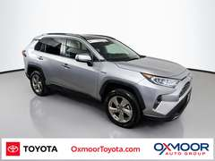
2021 Toyota RAV4 Limited
Certified pre-owned $2,710 under KBB fair price Autotrader: Great price Price cut $6,694
79,691 mi 2.5L hybrid, AWD Silver Sky Metallic ~39 mpg, about $2,994/yr in gas at 25,000 mi
Oxmoor Toyota ★4.9, Louisville, KY, 239 mi away, listed 50 days ago
7
2023 Toyota RAV4 XLE
New since last check Certified pre-owned $1,965 under KBB fair price Autotrader: Great price
84,617 mi 2.5L hybrid, AWD Ice Cap ~39 mpg, about $2,994/yr in gas at 25,000 mi
Convenience Package
Oxmoor Toyota ★4.9, Louisville, KY, 239 mi away, listed 22 days ago
8
no photo
2020 Toyota RAV4 XLE
New since last check $2,279 under KBB fair price Autotrader: Great price
138,007 mi 2.5L hybrid, AWD Ruby Flare Pearl ~39 mpg, about $2,994/yr in gas at 25,000 mi
Convenience Package; XLE Grade Weather Package; Pr
Carousel Motors ★4.5, Iowa City, IA, 194 mi away, listed 8 days ago
New RAV4 (all hybrid now) 1
no photo
2026 Toyota RAV4 LE
Cut $750 since last check New $130 under sticker Just listed
New 2.5L hybrid, FWD Ice Cap ~39 mpg, about $2,994/yr in gas at 25,000 mi
Lou Fusz Toyota ★4.9, Saint Louis, MO, 228 mi away, listed 3 days ago
2
2026 Toyota RAV4 LE
New $0 under sticker
New 2.5L hybrid, FWD Ice Cap ~39 mpg, about $2,994/yr in gas at 25,000 mi
Hesser Toyota ★4.7, Janesville, WI, 118 mi away, listed 15 days ago
3
2026 Toyota RAV4 LE
New $0 under sticker
New 2.5L hybrid, FWD Ice ~39 mpg, about $2,994/yr in gas at 25,000 mi
Toyota on Western ★4.6, Chicago, IL, 37 mi away, listed 11 days ago
Honda CR-V Hybrid 1
2022 Honda CR-V EX-L
$3,619 under KBB fair price Autotrader: Great price One owner Price cut $3,744
35,428 mi 2L hybrid, AWD Lunar Silver Metallic ~37 mpg, about $3,155/yr in gas at 25,000 mi
Reineke Ford Lincoln ★4.8, Findlay, OH, 218 mi away, listed 59 days ago
2
2024 Honda CR-V Sport
Cut $300 since last check $3,020 under KBB fair price Autotrader: Great price One owner Price cut $724 Just listed
47,097 mi 2L hybrid, AWD Crystal Black Pearl ~37 mpg, about $3,155/yr in gas at 25,000 mi
Fritz in Fishers ★4.9, Fishers, IN, 131 mi away, listed 7 days ago
3
2024 Honda CR-V Sport
Certified pre-owned $2,573 under KBB fair price Autotrader: Great price One owner
43,382 mi 2L hybrid, FWD Lunar Silver Metallic ~40 mpg, about $2,919/yr in gas at 25,000 mi
Dahl Honda Stevens Point ★4.9, Stevens Point, WI, 243 mi away, listed 97 days ago
4
2025 Honda CR-V Sport
$2,586 under KBB fair price One owner
43,619 mi 2L hybrid, AWD Black ~37 mpg, about $3,155/yr in gas at 25,000 mi
Gerald Nissan of Naperville ★4.4, Naperville, IL, 40 mi away, listed 58 days ago
5
2025 Honda CR-V Sport Touring
Certified pre-owned $2,403 under KBB fair price Autotrader: Great price One owner Price cut $3,329
64,338 mi 2L hybrid, AWD Still Night Pearl ~37 mpg, about $3,155/yr in gas at 25,000 mi
Honda Marysville ★5.0, Marysville, OH, 246 mi away, listed 66 days ago
6
2025 Honda CR-V Sport
New since last check $1,637 under KBB fair price Autotrader: Great price
25,373 mi 2L hybrid, FWD Crystal Black Pearl ~40 mpg, about $2,919/yr in gas at 25,000 mi
Jake Sweeney Mitsubishi ★5.0, Cincinnati, OH, 223 mi away, listed 50 days ago
7
2023 Honda CR-V Sport
New since last check Certified pre-owned $1,723 under KBB fair price Autotrader: Great price One owner Price cut $1,480
40,854 mi 2L hybrid, AWD Platinum White Pearl ~37 mpg, about $3,155/yr in gas at 25,000 mi
Rosen Honda ★4.8, Greenfield, WI, 116 mi away, listed 147 days ago
8
2024 Honda CR-V Sport
New since last check $1,590 under KBB fair price Autotrader: Great price One owner
76,481 mi 2L hybrid, AWD Lunar Silver Metallic ~37 mpg, about $3,155/yr in gas at 25,000 mi
Brad Deery Honda ★4.9, West Burlington, IA, 176 mi away, listed 77 days ago
New CR-V Hybrid 1
2027 Honda CR-V Sport
New $1,693 under sticker
New 2L hybrid, FWD Meteorite Gray Metallic ~40 mpg, about $2,919/yr in gas at 25,000 mi
Honda City ★4.5, Chicago, IL, 39 mi away, listed 9 days ago
2
no photo
2027 Honda CR-V Sport
New $1,517 under sticker
New 2L hybrid, FWD Platinum White Pearl ~40 mpg, about $2,919/yr in gas at 25,000 mi
Great Lakes Honda of Fishers ★5.0, Fishers, IN, 130 mi away, listed 32 days ago
3
2027 Honda CR-V Sport
New $2,461 under sticker
New 2L hybrid, AWD Solar Silver Metallic ~37 mpg, about $3,155/yr in gas at 25,000 mi
Patriot Honda of Danville ★5.0, Danville, IL, 74 mi away, listed 9 days ago
Lexus hybrids 1
2024 Lexus RX 500h F Sport
$7,062 under KBB fair price Autotrader: Great price One owner Price cut $3,647
33,023 mi 2.4L hybrid, 4x4 Copper Crest ~27 mpg, about $4,324/yr in gas at 25,000 mi
Cold Area Package; Accessory Package (Z1)
Seelye KIA of Battle Creek ★5.0, Battle Creek, MI, 156 mi away, listed 113 days ago
2
2025 Lexus NX 350h AWD
Cut $509 since last check Certified pre-owned $5,740 under KBB fair price One owner
14,598 mi 2.5L hybrid, 4x4 Grecian Water ~39 mpg, about $2,994/yr in gas at 25,000 mi
Cold Area Package; Towing Package (2000 Lbs)
McGrath Lexus of Westmont ★4.8, Westmont, IL, 39 mi away, listed 109 days ago
3
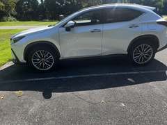
2024 Lexus NX 350h AWD
New since last check $3,460 under KBB fair price Autotrader: Great price One owner
16,000 mi 2.5L hybrid, 4x4 White ~39 mpg, about $2,994/yr in gas at 25,000 mi
Vision Package; Smart Phone Convenience Package; C
Private Seller Exchange, Cincinnati, OH, 231 mi away, listed 39 days ago
4
2024 Lexus RX 500h F Sport
Certified pre-owned $2,700 under KBB fair price Autotrader: Great price One owner
30,029 mi 2.4L hybrid, 4x4 Caviar ~27 mpg, about $4,324/yr in gas at 25,000 mi
Convenience Package; Technology Package; Cold Area
Lexus of Toledo ★4.8, Toledo, OH, 215 mi away, listed 87 days ago
5
no photo
2024 Lexus RX 350h
Certified pre-owned $2,352 under KBB fair price One owner
5,673 mi 2.5L hybrid, 4x4 Iridium ~36 mpg, about $3,243/yr in gas at 25,000 mi
Accessory Package (Z1); Cold Area Package
McGrath Lexus of Westmont ★4.8, Westmont, IL, 39 mi away, listed 25 days ago
6
2025 Lexus NX 350h AWD
$2,138 under KBB fair price One owner
7,788 mi 2.5L hybrid, 4x4 Caviar ~39 mpg, about $2,994/yr in gas at 25,000 mi
Cold Area Package; Towing Package (2000 Lbs)
Mungenast Lexus of St Louis ★4.8, Ballwin, MO, 231 mi away, listed 67 days ago
7
2025 Lexus RX 500h F Sport
$2,222 under KBB fair price Autotrader: Great price
13,163 mi 2.4L hybrid, 4x4 Cloudburst Gray ~27 mpg, about $4,324/yr in gas at 25,000 mi
Convenience Package; Accessory Package (2T)
Toyota of Louisville ★5.0, Louisville, KY, 239 mi away, listed 128 days ago
8
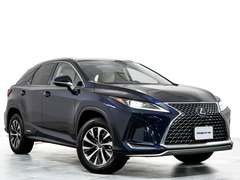
2021 Lexus RX 450h AWD
New since last check $2,643 under KBB fair price Autotrader: Great price One owner
100,573 mi 3.5L hybrid, 4x4 Mica ~30 mpg, about $3,892/yr in gas at 25,000 mi
Premium Package
Elmhurst Ford ★5.0, Bensenville, IL, 48 mi away, listed 65 days ago
Live-in-it space
If "lives in her car" is close to literal, the Bronco is the wrong shape: short, loud, a high load floor and 20 mpg. These are the vehicles with a flat floor you can stretch out on, three rows of seats that disappear, power everything and real highway quiet. The Sienna is the standout: a hybrid minivan that gets 36 mpg, offers AWD, and has 101 cu ft behind the front seats.
Fit for her
Toyota Sienna (hybrid) Reliability ★★★★★ · Comfort ★★★★★ · Room ★★★★★
36 mpg combined, every one is a hybrid, AWD available Third row folds into the floor; 8 feet of flat floor with the second row out Power sliding doors, 120-volt outlet, available built-in vacuum and fridge Ex-rental XLEs from Hertz are the cheap way in; get a pre-purchase inspection Fit for her
Toyota Grand Highlander / Highlander Hybrid Reliability ★★★★ · Comfort ★★★★★ · Room ★★★★★
34 to 36 mpg in a 3-row SUV; nothing else this size comes close Grand Highlander has 98 cu ft and an adult-size third row Highlander Hybrid used examples start near $30,000 Both ride and sound like a Lexus at highway speed Fit for her
Kia Telluride, Honda Odyssey, Kia Carnival Reliability ★★★★ · Comfort ★★★★★ · Room ★★★★★
Telluride: best-looking 3-row, 10-yr/100k powertrain warranty, but 21 mpg Odyssey: the best-driving minivan, 22 mpg, the most used supply near you Carnival: minivan that looks like an SUV; 2025+ hybrid gets 33 mpg All three cost $3,000+ more a year in gas than the Sienna at 25,000 miles
Toyota Sienna 1
2025 Toyota Sienna XLE
$4,608 under KBB fair price Autotrader: Great price One owner Just listed
59,341 mi 2.5L hybrid, FWD Gray ~36 mpg, about $3,243/yr in gas at 25,000 mi
Hertz Car Sales St. Louis ★4.6, Florissant, MO, 214 mi away, listed 4 days ago
2
2025 Toyota Sienna XLE
$3,319 under KBB fair price Autotrader: Great price One owner Price cut $2,701
56,291 mi 2.5L hybrid, FWD Silver ~36 mpg, about $3,243/yr in gas at 25,000 mi
Hertz Car Sales St. Louis ★4.6, Florissant, MO, 214 mi away, listed 50 days ago
3
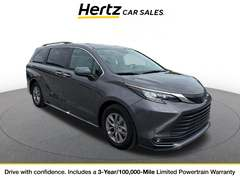
2025 Toyota Sienna XLE
$2,929 under KBB fair price Autotrader: Great price One owner
54,575 mi 2.5L hybrid, FWD Gray ~36 mpg, about $3,243/yr in gas at 25,000 mi
Hertz Car Sales Detroit, Woodhaven, MI, 246 mi away, listed 64 days ago
4
2025 Toyota Sienna XLE
$1,988 under KBB fair price Autotrader: Great price One owner
76,120 mi 2.5L hybrid, FWD Blue ~36 mpg, about $3,243/yr in gas at 25,000 mi
Hertz Car Sales St. Louis ★4.6, Florissant, MO, 214 mi away, listed 10 days ago
5
2023 Toyota Sienna LE
New since last check $2,120 under KBB fair price Autotrader: Great price Price cut $2,318
77,259 mi 2.5L hybrid, AWD Predawn Gray Mica ~35 mpg, about $3,336/yr in gas at 25,000 mi
Jeff Wyler Hyundai of Colerain ★4.9, Cincinnati, OH, 220 mi away, listed 25 days ago
6
2023 Toyota Sienna XSE
$1,986 under KBB fair price Autotrader: Great price
69,950 mi 2.5L hybrid, AWD Ruby Flare Pearl ~35 mpg, about $3,336/yr in gas at 25,000 mi
Cronin Richmond Toyota Nissan ★5.0, Richmond, IN, 186 mi away, listed 112 days ago
7
2021 Toyota Sienna LE
$1,810 under KBB fair price Autotrader: Great price One owner
70,409 mi 2.5L hybrid, AWD Silver ~35 mpg, about $3,336/yr in gas at 25,000 mi
Northside Ford Lincoln ★4.4, Effingham, IL, 151 mi away, listed 101 days ago
8
2021 Toyota Sienna XLE
$2,265 under KBB fair price Autotrader: Great price
124,189 mi 2.5L hybrid, FWD Gray ~36 mpg, about $3,243/yr in gas at 25,000 mi
XLE Plus Package
Miles Chevrolet ★4.9, Decatur, IL, 111 mi away, listed 50 days ago
New Sienna 1
no photo
2026 Toyota Sienna LE
New $0 under sticker Just listed
New 2.5L hybrid, FWD Ice Cap ~36 mpg, about $3,243/yr in gas at 25,000 mi
Joseph Toyota of Cincinnati ★4.5, Cincinnati, OH, 221 mi away, listed 2 days ago
2
no photo
2026 Toyota Sienna LE
New $0 under sticker Just listed
New 2.5L hybrid, FWD Ice Cap ~36 mpg, about $3,243/yr in gas at 25,000 mi
Joseph Toyota of Cincinnati ★4.5, Cincinnati, OH, 221 mi away, listed 2 days ago
3
2026 Toyota Sienna LE
New $0 under sticker Just listed
New 2.5L hybrid, FWD Heavy Metal ~36 mpg, about $3,243/yr in gas at 25,000 mi
Toyota of Naperville ★5.0, Naperville, IL, 40 mi away, listed 3 days ago
Toyota Grand Highlander and Highlander Hybrid 1
2026 Toyota Grand Highlander AWD Hybrid
Certified pre-owned $5,040 under KBB fair price Autotrader: Great price Just listed
4,943 mi 2.5L hybrid, AWD Pearl ~34 mpg, about $3,434/yr in gas at 25,000 mi
Toyota of Brookfield ★3.9, Brookfield, WI, 128 mi away, listed 3 days ago
2
2026 Toyota Highlander Limited
$2,990 under KBB fair price Autotrader: Great price
8,259 mi 2.5L hybrid, AWD Midnight Black Metallic ~35 mpg, about $3,336/yr in gas at 25,000 mi
Toyota of Downtown Chicago ★4.7, Chicago, IL, 47 mi away, listed 11 days ago
3
2026 Toyota Highlander XLE
New since last check Certified pre-owned $2,125 under KBB fair price Autotrader: Great price One owner Just listed
11,260 mi 2.5L hybrid, AWD Pearl ~35 mpg, about $3,336/yr in gas at 25,000 mi
Wilde Toyota ★4.9, Milwaukee, WI, 120 mi away, listed 4 days ago
4
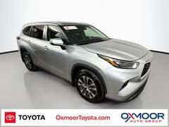
2023 Toyota Highlander XLE
Certified pre-owned $3,415 under KBB fair price Autotrader: Great price One owner
91,754 mi 2.5L hybrid, AWD Celestial Silver Metallic ~35 mpg, about $3,336/yr in gas at 25,000 mi
Oxmoor Toyota ★4.9, Louisville, KY, 239 mi away, listed 72 days ago
5
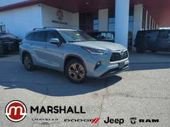
2022 Toyota Highlander Bronze Edition
New since last check $3,324 under KBB fair price Autotrader: Great price Price cut $5,074
162,688 mi 2.5L hybrid, AWD Gray ~35 mpg, about $3,336/yr in gas at 25,000 mi
Marshall Chrysler Dodge Jeep RAM ★4.8, Crittenden, KY, 241 mi away, listed 60 days ago
6
2023 Toyota Highlander Platinum
$3,201 under KBB fair price Autotrader: Great price
70,164 mi 2.5L hybrid, AWD Silver ~35 mpg, about $3,336/yr in gas at 25,000 mi
Monster Motors ★5.0, Michigan Center, MI, 193 mi away, listed 15 days ago
7
2020 Toyota Highlander Platinum
Certified pre-owned $3,290 under KBB fair price Autotrader: Great price One owner Price cut $5,194
107,119 mi 2.5L hybrid, AWD Moon Dust ~35 mpg, about $3,336/yr in gas at 25,000 mi
Oxmoor Toyota ★4.9, Louisville, KY, 239 mi away, listed 40 days ago
8
2021 Toyota Highlander XLE
New since last check $1,911 under KBB fair price Autotrader: Great price One owner
52,435 mi 2.5L hybrid, AWD Midnight Black Metallic ~35 mpg, about $3,336/yr in gas at 25,000 mi
Napleton's Auto Park of Urbana ★4.9, Urbana, IL, 79 mi away, listed 24 days ago
New Grand Highlander / Highlander Hybrid 1
no photo
2026 Toyota Grand Highlander XLE
New $2,587 under sticker Just listed
New 2.5L hybrid, FWD Wind Chill Pearl ~34 mpg, about $3,434/yr in gas at 25,000 mi
Elgin Toyota ★4.9, Streamwood, IL, 56 mi away, listed 3 days ago
2
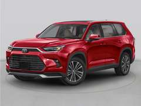
2026 Toyota Grand Highlander XLE
New $3,472 under sticker Just listed
New 2.5L hybrid, FWD Midnight Black Metallic ~34 mpg, about $3,434/yr in gas at 25,000 mi
Toyota of Brookfield ★3.9, Brookfield, WI, 128 mi away, listed yesterday
3
2026 Toyota Grand Highlander XLE
New $3,557 under sticker
New 2.5L hybrid, FWD Pearl ~34 mpg, about $3,434/yr in gas at 25,000 mi
Toyota of Brookfield ★3.9, Brookfield, WI, 128 mi away, listed 23 days ago
Kia Telluride 1
2024 Kia Telluride EX
$4,540 under KBB fair price Autotrader: Great price One owner
44,664 mi 3.8L 6cyl, FWD Ebony Black ~22 mpg, about $5,307/yr in gas at 25,000 mi
EX Captain's Chair Package
Jeff Wyler Honda in Florence ★5.0, Florence, KY, 229 mi away, listed 108 days ago
2
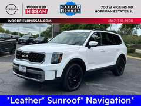
2023 Kia Telluride SX X-Line
$4,326 under KBB fair price Autotrader: Great price One owner
87,120 mi 3.8L 6cyl, AWD Glacial White Pearl ~21 mpg, about $5,560/yr in gas at 25,000 mi
Woodfield Nissan ★4.9, Hoffman Estates, IL, 57 mi away, listed 45 days ago
3
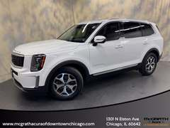
2022 Kia Telluride EX
$3,665 under KBB fair price Autotrader: Great price One owner
36,778 mi 3.8L 6cyl, FWD Glacial White Pearl ~22 mpg, about $5,307/yr in gas at 25,000 mi
McGrath Acura of Downtown Chicago ★5.0, Chicago, IL, 46 mi away, listed 153 days ago
4
2025 Kia Telluride S
New since last check $3,509 under KBB fair price Autotrader: Great price One owner
28,961 mi 3.8L 6cyl, AWD Ebony Black ~21 mpg, about $5,560/yr in gas at 25,000 mi
EchoPark - St. Louis ★5.0, Chesterfield, MO, 232 mi away, listed 63 days ago
5
2025 Kia Telluride S
Certified pre-owned $3,117 under KBB fair price Autotrader: Great price One owner
61,561 mi 3.8L 6cyl, AWD Glacial White Pearl ~21 mpg, about $5,560/yr in gas at 25,000 mi
Napleton's Kia of Elmhurst ★5.0, Elmhurst, IL, 47 mi away, listed 58 days ago
6
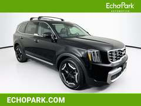
2025 Kia Telluride S
$3,239 under KBB fair price Autotrader: Great price One owner
51,853 mi 3.8L 6cyl, AWD Ebony Black ~21 mpg, about $5,560/yr in gas at 25,000 mi
EchoPark - St. Louis ★5.0, Chesterfield, MO, 232 mi away, listed 71 days ago
Honda Odyssey 1
2025 Honda Odyssey EX-L
$2,039 under KBB fair price Autotrader: Great price One owner
50,576 mi 3.5L 6cyl, FWD Crystal Black Pearl ~22 mpg, about $5,307/yr in gas at 25,000 mi
Nissan of Elgin ★5.0, Elgin, IL, 63 mi away, listed 148 days ago
2
2025 Honda Odyssey Sport-L
$806 under KBB fair price Autotrader: Great price One owner
49,199 mi 3.5L 6cyl, FWD Platinum White Pearl ~22 mpg, about $5,307/yr in gas at 25,000 mi
Advantage Acura of Naperville ★5.0, Naperville, IL, 40 mi away, listed 44 days ago
3
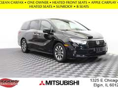
2023 Honda Odyssey EX-L
$739 under KBB fair price Autotrader: Great price One owner
17,505 mi 3.5L 6cyl, FWD Crystal Black Pearl ~22 mpg, about $5,307/yr in gas at 25,000 mi
Biggers Mitsubishi ★5.0, Elgin, IL, 58 mi away, listed 44 days ago
4
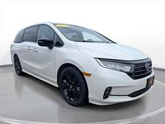
2023 Honda Odyssey Sport
$1,560 under KBB fair price Autotrader: Great price One owner
80,948 mi 3.5L 6cyl, FWD Platinum White Pearl ~22 mpg, about $5,307/yr in gas at 25,000 mi
SVG Chevrolet ★4.6, Greenville, OH, 186 mi away, listed 8 days ago
5
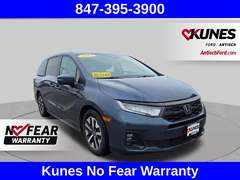
2025 Honda Odyssey EX-L
New since last check $488 under KBB fair price Autotrader: Great price One owner
53,069 mi 3.5L 6cyl, FWD Modern Steel Metallic ~22 mpg, about $5,307/yr in gas at 25,000 mi
Kunes Ford Of Antioch ★4.7, Antioch, IL, 85 mi away, listed 59 days ago
6
2025 Honda Odyssey EX-L
New since last check $343 under KBB fair price Good price One owner
46,108 mi 3.5L 6cyl, FWD Solar Silver Metallic ~22 mpg, about $5,307/yr in gas at 25,000 mi
Jaguar Land Rover Schaumburg ★4.8, Schaumburg, IL, 57 mi away, listed 50 days ago
Kia Carnival 1
2025 Kia Carnival
New since last check $1,414 under KBB fair price Autotrader: Great price One owner
56,189 mi 3.5L 6cyl, FWD Deep Chroma Blue ~21 mpg, about $5,560/yr in gas at 25,000 mi
Kunes Hyundai of Sycamore ★4.7, Sycamore, IL, 68 mi away, listed 67 days ago
2
2023 Kia Carnival LX
$1,571 under KBB fair price Autotrader: Great price One owner Price cut $1,920
44,995 mi 3.5L 6cyl, FWD Flare Red ~21 mpg, about $5,560/yr in gas at 25,000 mi
Great Lakes Honda of Fishers ★5.0, Fishers, IN, 130 mi away, listed 47 days ago
3
2024 Kia Carnival LX
$2,053 under KBB fair price Autotrader: Great price Price cut $1,298
75,193 mi 3.5L 6cyl, FWD Panthera Metal ~21 mpg, about $5,560/yr in gas at 25,000 mi
NW Automotive Group ★4.8, Cincinnati, OH, 227 mi away, listed 101 days ago
4
2024 Kia Carnival EX
Certified pre-owned $1,308 under KBB fair price Autotrader: Great price One owner Price cut $1,051
18,793 mi 3.5L 6cyl, FWD Ceramic Silver ~21 mpg, about $5,560/yr in gas at 25,000 mi
Kia Store East ★4.8, Louisville, KY, 239 mi away, listed 16 days ago
5
2023 Kia Carnival EX
$1,713 under KBB fair price Autotrader: Great price One owner
93,019 mi 3.5L 6cyl, FWD Panthera Metal ~21 mpg, about $5,560/yr in gas at 25,000 mi
Bill Estes Ford ★4.9, Brownsburg, IN, 124 mi away, listed 65 days ago
6
2022 Kia Carnival SX
$1,804 under KBB fair price Autotrader: Great price Price cut $2,235
70,502 mi 3.5L 6cyl, FWD Ceramic Silver ~21 mpg, about $5,560/yr in gas at 25,000 mi
Beechmont Toyota ★4.9, Cincinnati, OH, 239 mi away, listed 72 days ago
1
2027 Kia Carnival
New $2,816 under sticker
New 3.5L 6cyl, FWD Deep Chroma Blue ~21 mpg, about $5,560/yr in gas at 25,000 mi
Kia Store East ★4.8, Louisville, KY, 239 mi away, listed 15 days ago
2
2027 Kia Carnival
New $2,841 under sticker
New 3.5L 6cyl, FWD Snow White Pearl ~21 mpg, about $5,560/yr in gas at 25,000 mi
Kia Store East ★4.8, Louisville, KY, 239 mi away, listed 81 days ago
Bronco vibe, less drama
Boxy, high, four-wheel drive, fun to look at, but built for 200,000 miles of commuting. The 4Runner is the Bronco's natural rival with a Toyota service record; the Wrangler 4xe is the plug-in Jeep that is suddenly cheap used; the Subarus are the practical pick; the Bronco Sport keeps the badge for $20,000 less.
Fit for her
Toyota 4Runner Reliability ★★★★★ · Comfort ★★★ · Room ★★★★
2025+ generation: 2.4 turbo, 22 mpg, hybrid 23 mpg; the old 4.0 V6 gets 17 Legendary resale and durability; bodies and frames outlast everything here Stiffer ride and more wind noise than a RAV4, far less than a Bronco New SR5s are discounted only $2,000 to $3,000; used is barely cheaper Fit for her
Jeep Wrangler 4xe Reliability ★★ · Comfort ★★ · Room ★★★
Plug-in hybrid: 21 miles electric, then 20 mpg; cheap if she can charge at home Used 4xe Saharas are $21,000 to $25,000, $5,000 under KBB, because buyers fear the battery Loudest, roughest ride of the group; only if the open-top life matters more than the drive Battery warranty 8 yr / 100,000 mi; check for the 2023 recall fix Fit for her
Subaru Outback / Forester and Bronco Sport Reliability ★★★★ · Comfort ★★★★ · Room ★★★★
Outback 28 mpg, Forester 29 mpg, AWD standard, EyeSight driver assist standard Outback Wilderness and Forester Wilderness have the lifted, rugged look Bronco Sport Big Bend: 26 mpg, Bronco styling, certified ones under $22,000 Watch Subaru CVTs past 100,000 miles; buy a certified one with the extended warranty
Toyota 4Runner 1
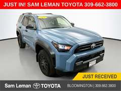
2026 Toyota 4Runner SR5
Cut $200 since last check $4,190 under KBB fair price Autotrader: Great price One owner
8,211 mi 2.4L 4-cyl turbo, FWD Heritage Blue ~22 mpg, about $5,307/yr in gas at 25,000 mi
Sam Leman Toyota ★5.0, Bloomington, IL, 80 mi away, listed 25 days ago
2
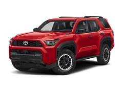
2025 Toyota 4Runner TRD Pro
$5,731 under KBB fair price Autotrader: Great price One owner
15,121 mi 2.4L hybrid, 4x4 Mudbath ~23 mpg, about $5,076/yr in gas at 25,000 mi
Mercedes-Benz of Hoffman Estates ★4.7, Hoffman Estates, IL, 57 mi away, listed 20 days ago
3
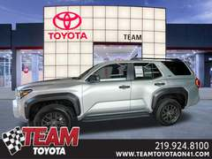
2025 Toyota 4Runner SR5
Certified pre-owned $3,160 under KBB fair price Autotrader: Great price One owner Price cut $1,000
33,568 mi 2.4L 4-cyl turbo, 4x4 Cutting Edge ~22 mpg, about $5,307/yr in gas at 25,000 mi
Team Toyota ★5.0, Schererville, IN, 27 mi away, listed 63 days ago
4
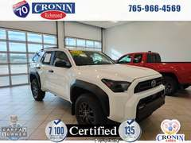
2026 Toyota 4Runner SR5
$2,766 under KBB fair price Autotrader: Great price One owner Price cut $1,734
2,475 mi 2.4L 4-cyl turbo, FWD Ice Cap ~22 mpg, about $5,307/yr in gas at 25,000 mi
Cronin Richmond Toyota Nissan ★5.0, Richmond, IN, 186 mi away, listed 36 days ago
5
2025 Toyota 4Runner TRD Off-Road
New since last check $3,432 under KBB fair price Autotrader: Great price One owner
13,593 mi 2.4L 4-cyl turbo, 4x4 Everest ~22 mpg, about $5,307/yr in gas at 25,000 mi
Toyota of Downtown Chicago ★4.7, Chicago, IL, 47 mi away, listed 16 days ago
6
2025 Toyota 4Runner SR5
$3,589 under KBB fair price Autotrader: Great price Price cut $2,233
32,243 mi 2.4L 4-cyl turbo, 4x4 Underground ~22 mpg, about $5,307/yr in gas at 25,000 mi
Napleton St Louis Nissan ★4.8, Saint Louis, MO, 223 mi away, listed 45 days ago
7
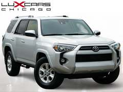
2024 Toyota 4Runner SR5
New since last check $2,925 under KBB fair price One owner
39,344 mi 4L 6cyl, FWD Classic Silver Metallic ~17 mpg, about $6,868/yr in gas at 25,000 mi
Lux Cars Chicago ★4.5, Buffalo Grove, IL, 62 mi away, listed 50 days ago
8
2026 Toyota 4Runner SR5
New since last check Certified pre-owned $2,532 under KBB fair price
13,240 mi 2.4L 4-cyl turbo, 4x4 Black ~22 mpg, about $5,307/yr in gas at 25,000 mi
Ed Martin Toyota ★4.7, Noblesville, IN, 130 mi away, listed 57 days ago
New 4Runner 1
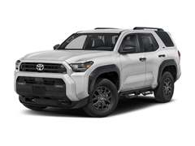
2026 Toyota 4Runner SR5
New $2,902 under sticker
New 2.4L 4-cyl turbo, 4x4 Ice ~22 mpg, about $5,307/yr in gas at 25,000 mi
Toyota of Brookfield ★3.9, Brookfield, WI, 128 mi away, listed 24 days ago
2
2026 Toyota 4Runner SR5
New $2,954 under sticker
New 2.4L 4-cyl turbo, 4x4 Red ~22 mpg, about $5,307/yr in gas at 25,000 mi
Toyota of Brookfield ★3.9, Brookfield, WI, 128 mi away, listed 23 days ago
3
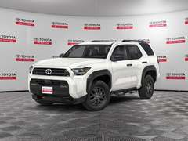
2026 Toyota 4Runner SR5
New $2,599 under sticker
New 2.4L 4-cyl turbo, 4x4 Ice ~22 mpg, about $5,307/yr in gas at 25,000 mi
Toyota on Western ★4.6, Chicago, IL, 37 mi away, listed 25 days ago
Jeep Wrangler (4xe and 2.0 turbo) 1
2024 Jeep Wrangler Unlimited Sahara
$5,025 under KBB fair price Autotrader: Great price One owner Just listed
41,854 mi 2L hybrid, 4x4 Black Clearcoat ~20 mpg, about $5,838/yr in gas at 25,000 mi
Technology Group; Safety Group
Henkel Automotive Group ★3.9, Springfield, MI, 154 mi away, listed 3 days ago
2
2025 Jeep Wrangler Unlimited Sport S 4xe
$5,161 under KBB fair price Autotrader: Great price One owner Just listed
28,218 mi 2L hybrid, 4x4 Bright White Clearcoat ~20 mpg, about $5,838/yr in gas at 25,000 mi
Quick Order Package 29W Willys 4XE; Convenience Gr
Henkel Automotive Group ★3.9, Springfield, MI, 154 mi away, listed 3 days ago
3
2022 Jeep Wrangler Unlimited Sahara
$5,033 under KBB fair price Autotrader: Great price One owner Just listed
25,048 mi 2L hybrid, 4x4 Granite Crystal Metallic Clear ~20 mpg, about $5,838/yr in gas at 25,000 mi
Cold Weather Group
Driven Auto Dundee ★5.0, East Dundee, IL, 62 mi away, listed 7 days ago
4
2023 Jeep Wrangler Unlimited Sahara
$4,676 under KBB fair price Autotrader: Great price One owner
56,006 mi 2L hybrid, 4x4 Black Clearcoat ~20 mpg, about $5,838/yr in gas at 25,000 mi
Old Orchard Nissan ★5.0, Skokie, IL, 56 mi away, listed 64 days ago
5
2023 Jeep Wrangler Unlimited Sahara
$4,829 under KBB fair price Autotrader: Great price One owner Just listed
31,574 mi 2L hybrid, 4x4 Silver Zynith Clearcoat ~20 mpg, about $5,838/yr in gas at 25,000 mi
Cold Weather Group
Henkel Automotive Group ★3.9, Springfield, MI, 154 mi away, listed 3 days ago
6
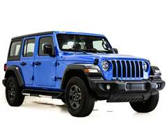
2024 Jeep Wrangler Unlimited Sport
New since last check $4,860 under KBB fair price Autotrader: Great price One owner
33,013 mi 2L 4-cyl turbo, 4x4 Hydro Blue Pearl Coat ~21 mpg, about $5,560/yr in gas at 25,000 mi
Napleton's River Oaks Chrysler Jeep Dodge ★5.0, Lansing, IL, 27 mi away, listed 72 days ago
7
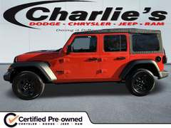
2023 Jeep Wrangler Unlimited Sport
Certified pre-owned $5,097 under KBB fair price Autotrader: Great price One owner Price cut $1,034
32,004 mi 2L 4-cyl turbo, 4x4 Punkn Metallic Clearcoat ~21 mpg, about $5,560/yr in gas at 25,000 mi
Charlie's Dodge Chrysler Jeep ★4.8, Maumee, OH, 217 mi away, listed 32 days ago
8
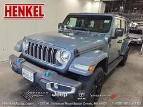
2024 Jeep Wrangler Unlimited Sahara
New since last check $4,094 under KBB fair price Autotrader: Great price One owner Just listed
29,740 mi 2L hybrid, 4x4 Anvil Clear Coat ~20 mpg, about $5,838/yr in gas at 25,000 mi
Henkel Automotive Group ★3.9, Springfield, MI, 154 mi away, listed 3 days ago
Subaru Outback and Forester 1
2021 Subaru Forester Touring
$5,798 under KBB fair price Autotrader: Great price One owner
119,688 mi 2.5L 4cyl, 4x4 Magnetite Gray Metallic ~29 mpg, about $4,026/yr in gas at 25,000 mi
Popular Package #2
Castle Subaru Of McHenry ★4.9, Mchenry, IL, 77 mi away, listed 56 days ago
2
2024 Subaru Outback Premium
$3,927 under KBB fair price Autotrader: Great price One owner Price cut $3,055
76,712 mi 2.5L 4cyl, 4x4 Crystal White Pearl ~28 mpg, about $4,170/yr in gas at 25,000 mi
Ed Napleton Honda St Peters ★5.0, St Peters, MO, 223 mi away, listed 95 days ago
3
no photo
2023 Subaru Outback Onyx Edition
New since last check Certified pre-owned $3,868 under KBB fair price One owner
76,528 mi 2.5L 4cyl, 4x4 Crystal White Pearl ~28 mpg, about $4,170/yr in gas at 25,000 mi
Gerald Subaru of Naperville, Naperville, IL, 40 mi away, listed 63 days ago
4
2021 Subaru Forester Limited
$3,805 under KBB fair price Autotrader: Great price
79,692 mi 2.5L 4cyl, 4x4 Bronze ~29 mpg, about $4,026/yr in gas at 25,000 mi
Popular Package #3
Showcase Auto Sales LLC ★4.9, Chesaning, MI, 231 mi away, listed 15 days ago
5
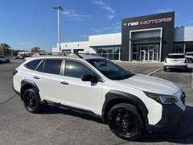
2022 Subaru Outback Wilderness
$3,169 under KBB fair price One owner Price cut $3,000
80,378 mi 2.4L 4-cyl turbo, 4x4 Crystal White Pearl ~25 mpg, about $4,670/yr in gas at 25,000 mi
Wilderness Package
RS Motors ★4.9, Indianapolis, IN, 129 mi away, listed 165 days ago
6
2024 Subaru Outback Touring XT
$2,069 under KBB fair price Autotrader: Great price One owner Price cut $1,262
39,328 mi 2.4L 4-cyl turbo, 4x4 Blue ~25 mpg, about $4,670/yr in gas at 25,000 mi
Ford Lincoln of Lafayette ★4.8, Lafayette, IN, 78 mi away, listed 36 days ago
7
2021 Subaru Forester Premium
New since last check $2,020 under KBB fair price Autotrader: Great price One owner
68,076 mi 2.5L 4cyl, 4x4 Gray Metallic ~29 mpg, about $4,026/yr in gas at 25,000 mi
Popular Package #1
SPECIALTY AUTO SALES & SERVICE ★4.7, Suamico, WI, 232 mi away, listed 30 days ago
8
2023 Subaru Outback Onyx Edition
$2,019 under KBB fair price One owner
66,522 mi 2.5L 4cyl, 4x4 Magnetite Gray Metallic ~28 mpg, about $4,170/yr in gas at 25,000 mi
Derrow-Shirkey Ford Lincoln ★4.5, Montpelier, OH, 170 mi away, listed 58 days ago
New Outback / Forester 1
2026 Subaru Forester Premium
New $5,739 under sticker
New 2.5L 4cyl, 4x4 Crystal White Pearl ~29 mpg, about $4,026/yr in gas at 25,000 mi
Subaru Evergreen Park ★5.0, Evergreen Park, IL, 33 mi away, listed 32 days ago
2
2026 Subaru Forester Premium
New $2,349 under sticker
New 2.5L 4cyl, 4x4 Crimson Red Pearl ~29 mpg, about $4,026/yr in gas at 25,000 mi
Subaru Evergreen Park ★5.0, Evergreen Park, IL, 33 mi away, listed 23 days ago
3
2026 Subaru Forester Sport
New $5,459 under sticker
New 2.5L 4cyl, 4x4 Crystal White Pearl ~29 mpg, about $4,026/yr in gas at 25,000 mi
Sport Package
Subaru Evergreen Park ★5.0, Evergreen Park, IL, 33 mi away, listed 137 days ago
Ford Bronco Sport (any color) 1
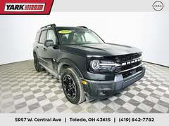
2025 Ford Bronco Sport Outer Banks
New since last check $8,985 under KBB fair price Autotrader: Great price One owner Price cut $8,593
16,048 mi 1.5L 3-cyl turbo, 4x4 Shadow Black ~26 mpg, about $4,490/yr in gas at 25,000 mi
Outer Banks Tech Package+
Yark Nissan ★5.0, Toledo, OH, 217 mi away, listed 39 days ago
2
2023 Ford Bronco Sport Big Bend
Certified pre-owned $5,115 under KBB fair price Autotrader: Great price One owner Price cut $2,000
36,189 mi 1.5L 3-cyl turbo, 4x4 Gray Metallic ~26 mpg, about $4,490/yr in gas at 25,000 mi
Auto Park Ford ★5.0, Sturgis, MI, 130 mi away, listed 50 days ago
3
2024 Ford Bronco Sport Big Bend
Certified pre-owned $4,470 under KBB fair price Autotrader: Great price
37,761 mi 1.5L 3-cyl turbo, 4x4 Azure Gray Metallic ~26 mpg, about $4,490/yr in gas at 25,000 mi
Black Diamond Off-Road Package; Class II Trailer T
Elmhurst Ford ★5.0, Bensenville, IL, 48 mi away, listed 78 days ago
4
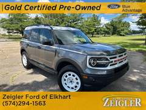
2023 Ford Bronco Sport Heritage
Certified pre-owned $4,570 under KBB fair price Autotrader: Great price One owner
25,096 mi 1.5L 3-cyl turbo, 4x4 Carbonized Gray Metallic ~26 mpg, about $4,490/yr in gas at 25,000 mi
Heritage Convenience Package
Zeigler Ford Lincoln Elkhart ★5.0, Elkhart, IN, 100 mi away, listed 89 days ago
5
2022 Ford Bronco Sport Outer Banks
$4,034 under KBB fair price Autotrader: Great price One owner
43,000 mi 1.5L 3-cyl turbo, 4x4 Cactus ~26 mpg, about $4,490/yr in gas at 25,000 mi
Tech Package; Class II Trailer Tow Package w/Trail
Countryside Nissan ★5.0, Countryside, IL, 37 mi away, listed 93 days ago
6
2025 Ford Bronco Sport Big Bend
New since last check $3,763 under KBB fair price Autotrader: Great price Price cut $1,714
33,461 mi 1.5L 3-cyl turbo, 4x4 Gray Metallic ~26 mpg, about $4,490/yr in gas at 25,000 mi
Great Lakes Honda of Fishers ★5.0, Fishers, IN, 130 mi away, listed 85 days ago
7
2025 Ford Bronco Sport Big Bend
New since last check $3,751 under KBB fair price Autotrader: Great price Price cut $2,553
44,000 mi 1.5L 3-cyl turbo, 4x4 Shadow Black ~26 mpg, about $4,490/yr in gas at 25,000 mi
Great Lakes Honda of Fishers ★5.0, Fishers, IN, 130 mi away, listed 81 days ago
8
2024 Ford Bronco Sport Big Bend
Certified pre-owned $3,920 under KBB fair price Autotrader: Great price
24,983 mi 1.5L 3-cyl turbo, 4x4 Blue Metallic ~26 mpg, about $4,490/yr in gas at 25,000 mi
Convenience Package
Alphorn Ford ★4.9, Monroe, WI, 132 mi away, listed 87 days ago
How to decide
The honest read on a Bronco for 25,000 miles a year
Gas: 19 to 21 mpg means about $5,838 a year at today's Illinois prices. A RAV4 Hybrid is $2,994. Over five years that gap is a used car.Noise: the Bronco's flat windshield and removable roof make it the loudest vehicle on this board at highway speed. Outer Banks with the sound-deadening headliner helps. Test-drive it at 70 mph before falling in love.Reliability: Consumer Reports rates the Bronco average, ahead of the Wrangler and well behind the 4Runner and RAV4. Known issues: 2021 to early-2022 2.7 V6 intake valves (engine replacements under warranty, fixed in production October 2021), early hardtops replaced under recall, and tie rods on hard off-road use.Resale: strong. Broncos hold value better than almost anything but a 4Runner, which softens the gas bill when she sells.If it has to be a Bronco: 2023 or newer, 2.3 engine, 4-door, Big Bend or Outer Banks, no Sasquatch, hardtop, and a Ford Power Protect extended warranty if she is buying used out of warranty. My ranking for her
Toyota RAV4 Hybrid (or CR-V Hybrid if she wants more room). Cheapest to own by a mile, AWD, bulletproof. Buy a 2022 to 2024 one under $28,000 or a new 2026 at sticker.Toyota Sienna if she really does live out of the car: nothing else combines 36 mpg with a flat 8-foot floor.Toyota 4Runner (2025+) for the rugged look without the Bronco's noise and repair record. Pay the premium once, keep it 15 years.Yellow Bronco : the Lafayette Yellowstone Heritage Edition at $54,995 or the Skokie Orange Metallic Wildtrak at $40,997, with eyes open about gas and noise. It is the only one on this list she will smile at every morning, and that counts for something.
Side by side at 25,000 miles a year
Vehicle MPG Gas / yr Typical price Reliability Comfort and noise Buy it for Ford Bronco 2.3 Big Bend 4-door 21 $5,560 $38k new / $30k used Average (CR); 2.3 avoids the V6 valve issue Loud at 70 mph, firm ride, hardtop creaks Removable roof, 4x4, resale, the look Ford Bronco 2.7 Outer Banks / Badlands 19 $6,145 $42k new / $34k used Average; 2021 to early-2022 V6 had valve failures Quieter trim, heated seats; still loud Power, towing, luxury trims Toyota RAV4 Hybrid 39 $2,994 $34k new / $25k used Excellent Quiet, soft, great seats Best cost per mile here Honda CR-V Hybrid 38 $3,072 $36k new / $27k used Excellent Quietest compact, roomiest back seat Comfort and space Lexus NX 350h 39 $2,994 $48k new / $47k used Excellent Luxury quiet, best seats If comfort is the whole point Toyota Sienna hybrid 36 $3,243 $44k new / $32k used Excellent Minivan quiet, flat floor, sliding doors Living in it, hauling anything Toyota Grand Highlander hybrid 34 $3,434 $46k new / $50k used Very good Big, quiet, adult third row Family-size with real mpg Kia Telluride 21 $5,560 $36k new / $26k used Good; long warranty Very comfortable, 3 rows Looks and warranty, not mpg Toyota 4Runner (2025+) 22 $5,307 $44k new / $38k used Excellent Firm, some wind noise Bronco shape with Toyota bones Jeep Wrangler 4xe 20 $5,838 $50k new / $22k used Below average Loud, rough Only for the open-top life Subaru Outback 28 $4,170 $30k new / $20k used Good Quiet, comfortable, wagon-easy loading Practical AWD on a budget Ford Bronco Sport 1.5 26 $4,490 $31k new / $21k used Average Car-quiet, small Bronco badge, half the price
Gas at $4.67 a gallon (AAA Illinois average, mid-October). MPG is EPA combined for the common configuration. Payments on the listings assume 10% down, 7.5% APR, 72 months and 7% tax and fees. "Under KBB" compares the asking price with Kelley Blue Book's fair purchase price as Autotrader reports it for that exact car.
How to shop these
Every "View" button opens the live Autotrader listing. Prices move daily; the Lafayette Yellowstone Heritage Edition at $54,995 or the Skokie Orange Metallic Wildtrak at $40,997 are the ones to call first.
For any used car: ask for the OASIS report (Ford), Toyota or Honda service history by VIN, and get a $150 to $200 independent pre-purchase inspection. Walk away from anything with a branded title.
Out-of-state purchases (Indiana, Wisconsin, Michigan, Ohio) are fine: the dealer collects no sales tax and she pays Illinois tax at titling. Budget a day for the drive.
Financing: get a credit-union pre-approval first (Consumers Credit Union, Alliant), then let the dealer try to beat it. Ford Credit runs 1.9% to 3.9% offers on 2026 Broncos most months.
Listings from Autotrader's dealer feed, 2026-10-31, searched from zip 60950 with a 250-mile radius; counts are Autotrader's totals that day. Reliability notes draw on Consumer Reports owner surveys and the NHTSA investigation of the 2021 Bronco 2.7-liter engine. This is research, not a dealer quote; confirm price, fees and history on the listing and in person.  2025 Toyota Sienna XLE59,341 mi2.5L hybrid, FWDGray~36 mpg, about $3,243/yr in gas at 25,000 miHertz Car Sales St. Louis ★4.6, Florissant, MO, 214 mi away, listed 4 days ago
2025 Toyota Sienna XLE59,341 mi2.5L hybrid, FWDGray~36 mpg, about $3,243/yr in gas at 25,000 miHertz Car Sales St. Louis ★4.6, Florissant, MO, 214 mi away, listed 4 days ago